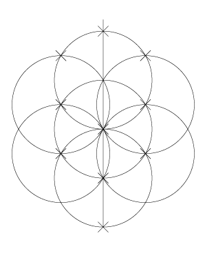
Let me state first of all that I am approaching this primarily from a professional interest in the informative and educational use of graphics, visual communication and geometry. I have no particular religion, dogma or belief system to either support or defend.
Ten Sefirot out of nothing... they are ten extending beyond limit: depth of beginning, depth of end, depth of good, depth of evil, depth above and depth below, depth of east and depth of west, depth of north and depth of south...Sefer Yetzirah, Saadia, 1:2
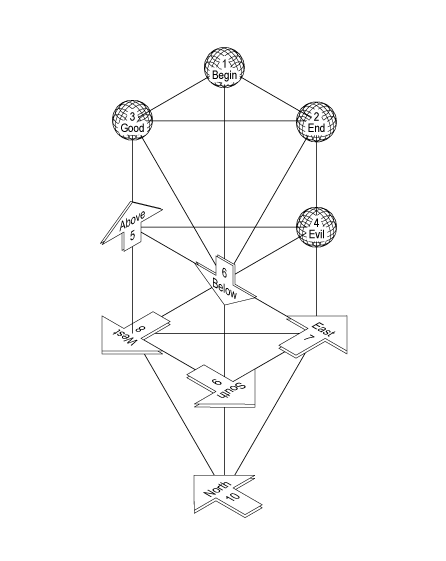
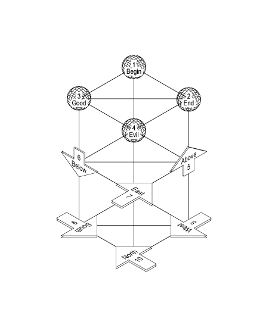
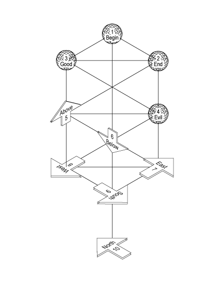
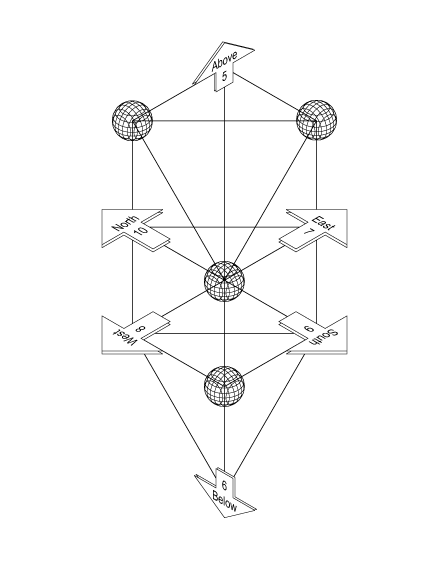
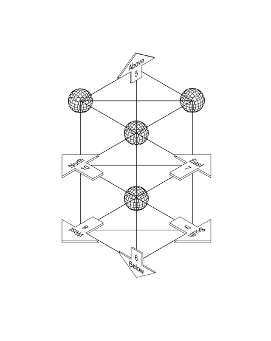
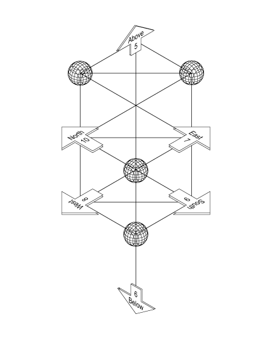
Ten Sefirot out of nothing.Sefer Yetzirah, Saadia, Chapter 4
One: Spirit-wind of the Living Elohim...
Two: Spirit from Spirit engraved and hewed: He cut the four dimensions of Heaven: the east, the west, the north and the south, and there is a wind for each direction.
Three: water of spirit...
Four: fire from water...
Five: He sealed the height, turning upwards...
Six: He sealed the depth and He turned below...
Seven: he sealed the east and turned forwards...
Eight: He sealed the west and turned backwards...
Nine: He sealed the south and turned to His right...
Ten: He sealed the north and turned to His left...
These are the ten Sefirot out of nothing, One: Spirit of the Living Elohim; two: wind of the spirit; three: water of the wind; four: fire from the water, height and depth, east and west, north and south.
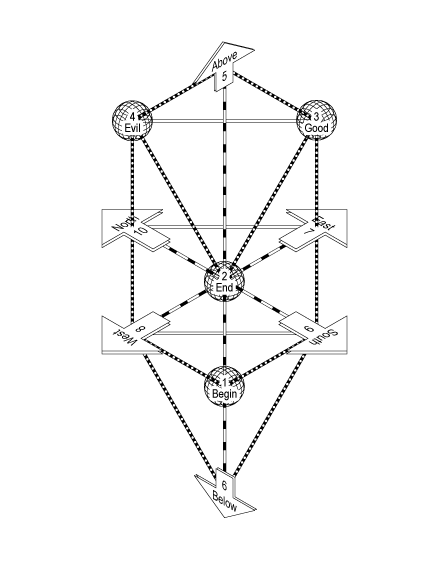
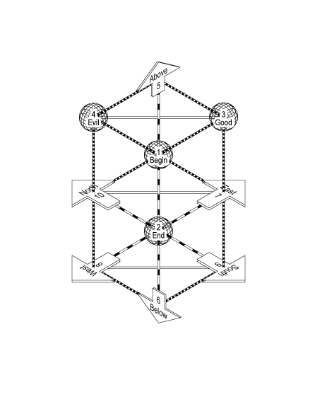
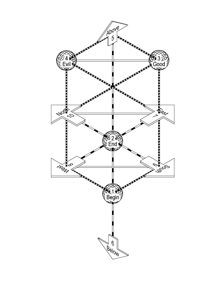
Three mothers: Alef, Mem, Shin: their basis is a scale of innocence and a scale of guilt and a tongue ordained to balance between the two.Sefer Yetzirah, Saadia, 1:3
Three mothers:... a great mystery, concealed, marvelous and magnificent whence emerge fire, wind [air, spirit, breath] and waterSefer Yetzirah, Saadia, 2:2
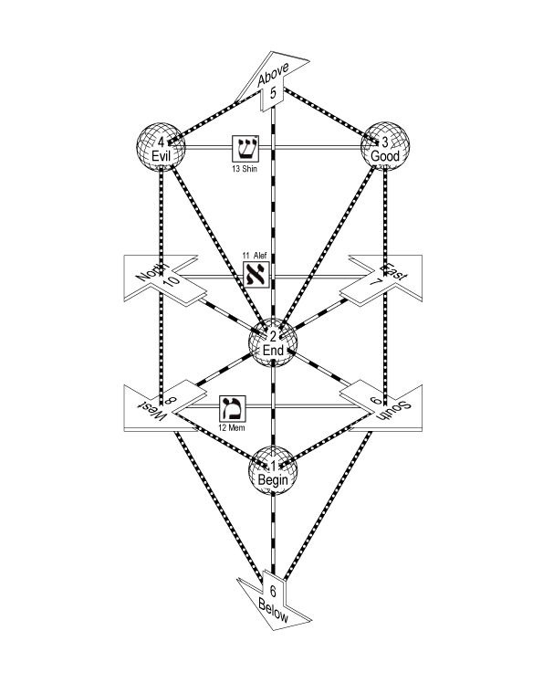
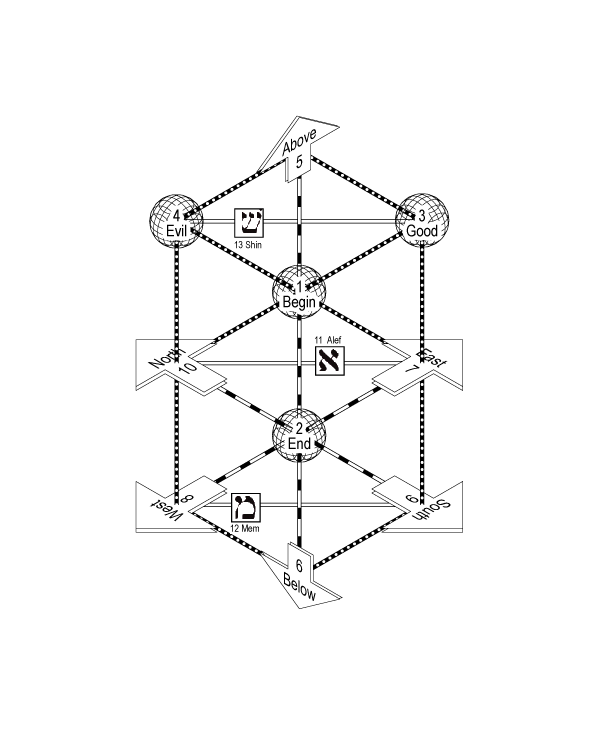
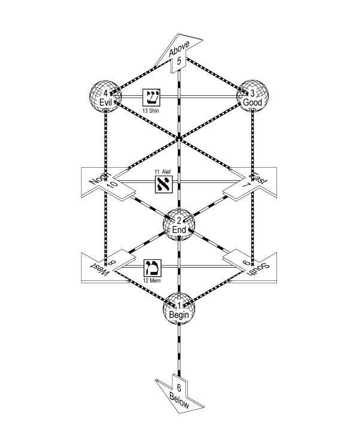
Seven doubles:... six sides in the six directions, and the Holy Palace ruling in the centerSefer Yetzirah, Saadia, 2:3
Seven Doubles:...Up and Down, East and West, North and South, And the Holy Palace precisely in the center and it supports them all.Sefer Yetzirah, GRA, 2:3
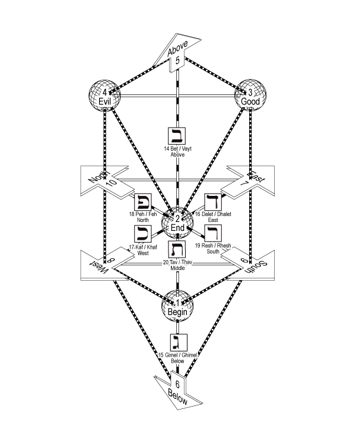
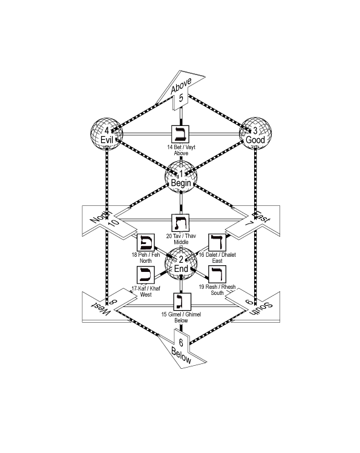
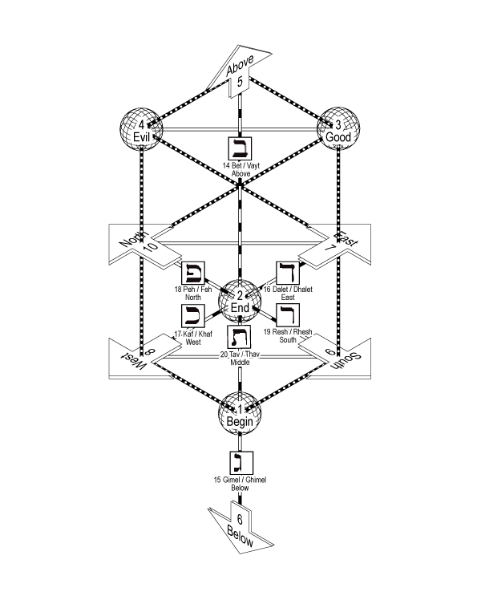
Twelve simples:... the extremity of the northeast, the extremity of the eastern height, the extremity of the eastern depth, the extremity of the northwest, the extremity of the northern height, the extremity of the northern depth, the extremity of the southwest, the extremity of the western height, the extremity of the western depth, the extremity of the southeast, the extremity of the southern height, the extremity of the southern depth.Sefer Yetzirah, Saadia, 2:4
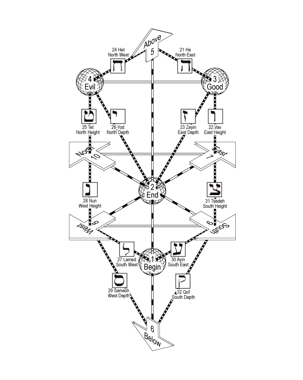
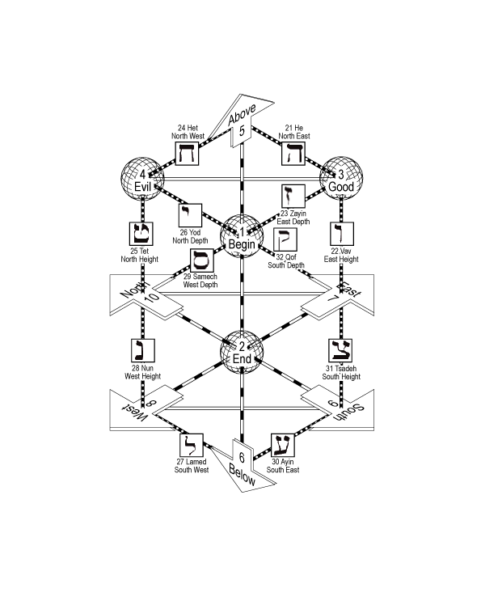
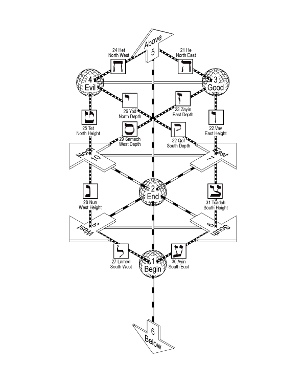
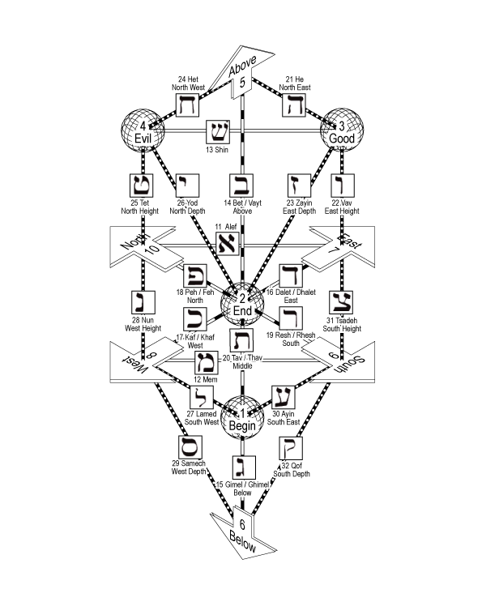
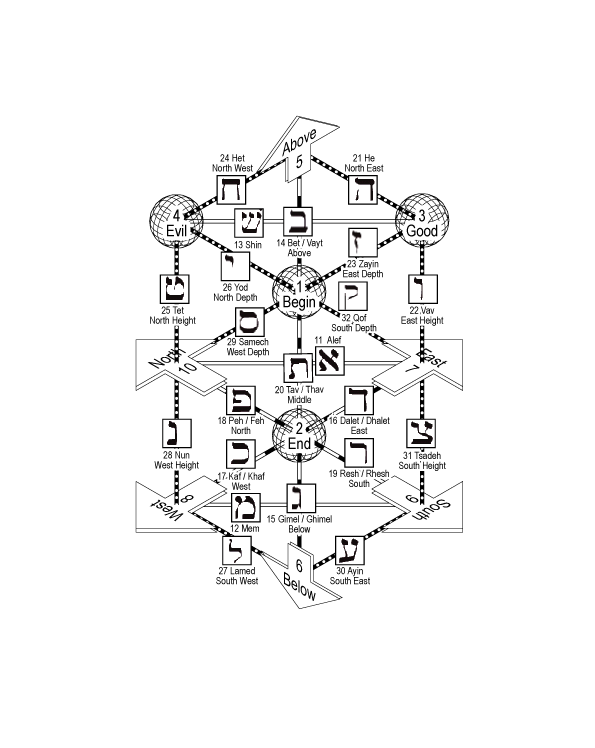
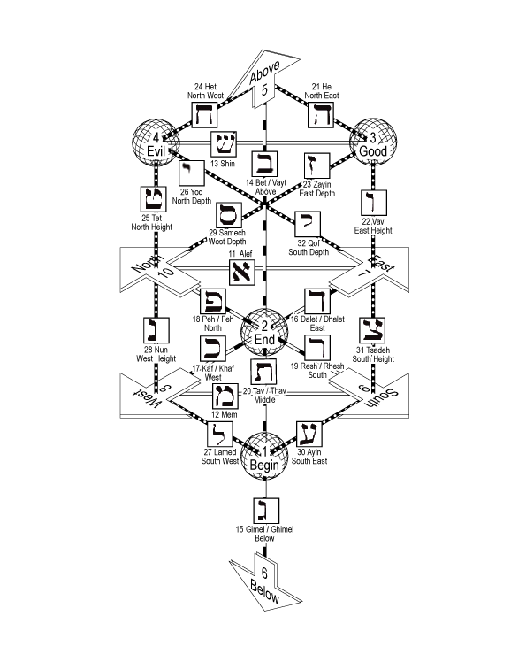
| # | Type | Hebrew | Character | Saadia | GRA | Westcott | # | ||||||||
|---|---|---|---|---|---|---|---|---|---|---|---|---|---|---|---|
| Attribute | Foundation | The Universe, The Dragon | The Year, The Wheel | The Soul, The Heart | Attribute | Foundation | The Universe, The Dragon | The Year, The Wheel | The Soul, The Heart | Attribute | |||||
| 1 | Sephiroth | 1 | Beginning | Beginning | Beginning | 1 | |||||||||
| 2 | 2 | End | End | End | 2 | ||||||||||
| 3 | 3 | Good | Good | Good | 3 | ||||||||||
| 4 | 4 | Evil | Evil | Evil | 4 | ||||||||||
| 5 | 5 | Above | Above | Above | 5 | ||||||||||
| 6 | 6 | Below | Below | Below | 6 | ||||||||||
| 7 | 7 | East | East | East | 7 | ||||||||||
| 8 | 8 | West | West | West | 8 | ||||||||||
| 9 | 9 | South | South | South | 9 | ||||||||||
| 10 | 10 | North | North | North | 10 | ||||||||||
| 11 | Three Mothers | Alef | Air / Balance | Air | Spring / Autumn | Chest | Air | Air | Spring / Autumn | Chest | Air | 11 | |||
| 12 | Mem | Water / Descend | Earth | Winter | Belly | Water | Earth | Winter | Belly | Water | 12 | ||||
| 13 | 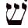 |
Shin | Fire / Ascend | Heaven | Summer | Head | Fire | Heaven | Summer | Head | Fire | 13 | |||
| 14 | Seven Doubles | Bet / Vayt | Above | Saturn | Saturday | Mouth | Above | Moon | Sunday | Right eye | Above | 14 | |||
| 15 | 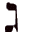 |
Gimel / Ghimel | Below | Jupiter | Sunday | Right eye | Below | Mars | Monday | Right ear | Below | 15 | |||
| 16 | 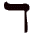 |
Dalet / Dhalet | East | Mars | Monday | Left eye | East | Sun | Tuesday | Right nostril | East | 16 | |||
| 17 | 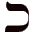 |
Kaf / Khaf | West | Sun | Tuesday | Right nostril | West | Venus | Wednesday | Left eye | West | 17 | |||
| 18 | Peh / Feh | North | Venus | Wednesday | Left nostril | North | Mercury | Thursday | Left ear | North | 18 | ||||
| 19 | 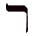 |
Resh / Rhesh | South | Mercury | Thursday | Right ear | South | Saturn | Friday | Left nostril | South | 19 | |||
| 20 | 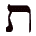 |
Tav / Thav | Middle | Moon | Friday | Left ear | Middle | Jupiter | Saturday | Mouth | Middle | 20 | |||
| 21 | Twelve Simples | 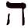 |
He | North East | Sight | Aries | Nissan | Liver | East Height | Speech | Aries | Nissan | Right foot | North East | 21 |
| 22 | 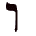 |
Vav | East Height | Hearing | Taurus | Iyyar | Gall-bladder | East North | Thought | Taurus | Iyyar | Right kidney | South East | 22 | |
| 23 | 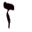 |
Zayin | East Depth | Smell | Gemini | Sivan | Spleen | East Depth | Motion | Gemini | Sivan | Left foot | East Height | 23 | |
| 24 | 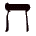 |
Het | North West | Speech | Cancer | Tammuz | Intestine | South Height | Sight | Cancer | Tammuz | Right hand | East Depth | 24 | |
| 25 | 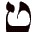 |
Tet | North Height | Eating | Leo | Ab | Right kidney | South East | Hearing | Leo | Ab | Left kidney | North Height | 25 | |
| 26 | 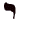 |
Yod | North Depth | Coition | Virgo | Elul | Left kidney | South Depth | Action | Virgo | Elul | Left hand | North Below | 26 | |
| 27 | 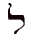 |
Lamed | South West | Action | Libra | Tishri | Intestines | West Height | Coition | Libra | Tishri | Gall bladder | South West | 27 | |
| 28 | 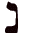 |
Nun | West Height | Walking | Scorpio | Marheshevan | Stomach | West South | Smell | Scorpio | Marheshevan | Intestine | North West | 28 | |
| 29 | 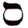 |
Samech | West Depth | Anger | Sagitarius | Kislev | Right hand | West Depth | Sleep | Sagitarius | Kislev | Kivah | West Height | 29 | |
| 30 | Ayin | South East | Laughter | Capricorn | Tevet | Left hand | North Height | Anger | Capricorn | Tevet | Liver | West Depth | 30 | ||
| 31 | 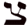 |
Tsadeh | South Height | Thought | Aquarius | Shivat | Right foot | North West | Taste | Aquarius | Shivat | Korkeban | South Above | 31 | |
| 32 | 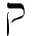 |
Qof | South Depth | Sleep | Pisces | Adar | Left foot | North Depth | Laughter | Pisces | Adar | Spleen | South Below | 32 | |
| # | Type | Hebrew | Character | Saadia | GRA | Westcott | # | ||||||||
| Attribute | Foundation | The Universe, The Dragon | The Year, The Wheel | The Soul, The Heart | Attribute | Foundation | The Universe, The Dragon | The Year, The Wheel | The Soul, The Heart | Attribute | |||||
Sepher Yetzirah Saadia version (HTML)
Sepher Yetzirah GRA version (PDF)
Sepher Yetzirah GRA version (HTML)
Source: http://www.fotthewuk.co.uk/newperspective/NewPerspectiveLegacy.html